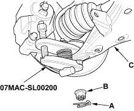
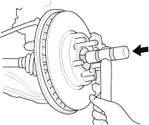
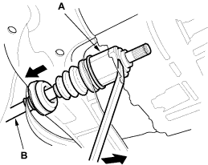
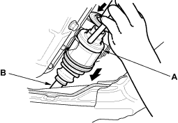

- Remove the cotter pin (A) from the lower arm ball joint castle nut (B) and remove the nut.

- Separate the ball joint from the lower arm (C) with the special tool, refer to the 2001 Civic Shop Manual (see page 18-9). Be careful not to dislodge the lower ball joint from the knuckle.
- Pull the knuckle outward and remove the driveshaft outboard joint from the front wheel hub using a plastic hammer.


- Pry/tap the inboard joint (A) with a prybar and remove the driveshaft from the differential case or bearing support as an assembly. Do not pull on the driveshaft (B) because the inboard joint may come apart. Draw the driveshaft straight out to avoid damaging the differential oil seal.
Left driveshaft:

Right driveshaft:
